Etapa 9 de 12
📝 Plan de Trabajo
Acá se organizan todas las actividades de una medida: quién las hace, qué derecho atienden, y en qué estado están. Primero vamos a ver cómo se crean y se siguen, y después vamos a entrar al detalle de una actividad puntual: comentarios, archivos, cambios de estado e historial.
Parte 1 Crear y organizar actividades
El sistema jerárquico para agregar actividades y cómo seguirlas de forma global.
Paso 1 de 5
Crear y organizar actividades

1
El Plan de Trabajo dentro de la medida
Todas las actividades de una medida viven en la sección "Plan de Trabajo". Arriba se ve el progreso general (Pendientes, En Progreso, Realizadas, Vencidas, Canceladas) y debajo, la tabla con cada actividad: tipo, equipo, responsables, fecha planificada, estado y plazo.
📸 Captura: 0039-medida-navegacion.png
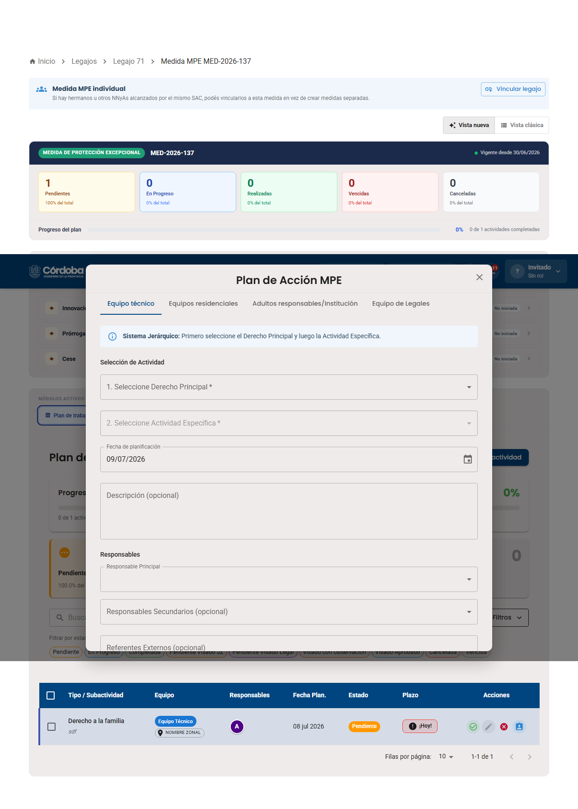
2
Agregar una actividad nueva
El botón "Agregar actividad" abre el modal "Plan de Acción MPE", organizado en 4 pestañas según quién la va a hacer: Equipo técnico, Equipos residenciales, Adultos responsables/Institución y Equipo de Legales. El sistema es jerárquico: primero elegís el "Derecho Principal" y recién después la "Actividad Específica" que corresponde a ese derecho.
📸 Captura: 0057-apertura-modal-inicial.png
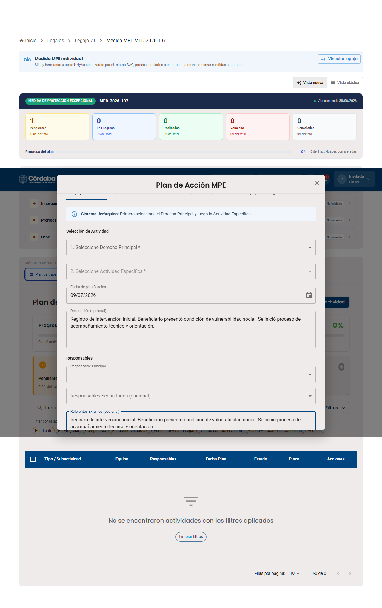
3
Completá los campos obligatorios
Si intentás guardar sin elegir Derecho Principal, Actividad Específica o Responsable Principal, el sistema marca cada campo en rojo con el motivo puntual. También podés escribir una Descripción y, si corresponde, un Referente Externo (una institución o persona de contacto) — el sistema aclara que la actividad aplica al NNyA de esa medida.
📸 Captura: 0058-apertura-paso1-completo.png
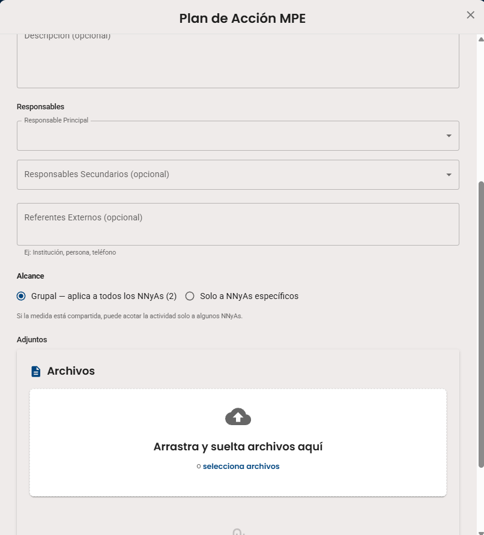
4
Si la medida es compartida: elegí el Alcance
Cuando el legajo pertenece a una medida compartida (por ejemplo, hermanos), el formulario suma una sección "Alcance": por defecto es "Grupal — aplica a todos los NNyAs", pero se puede cambiar a "Solo a NNyAs específicos" y elegir de una lista qué legajos puntuales quedan alcanzados por esa actividad y sus adjuntos. Esta misma opción de Alcance aparece también en los formularios de Apertura, Innovación, Prórroga y Cese: siempre que la medida esté vinculada a más de un legajo, se puede decidir si ese paso vale para todos o solo para algunos.
📸 Capturas: 0136-plan-accion-alcance.png, 0137-plan-accion-alcance-especificos.png
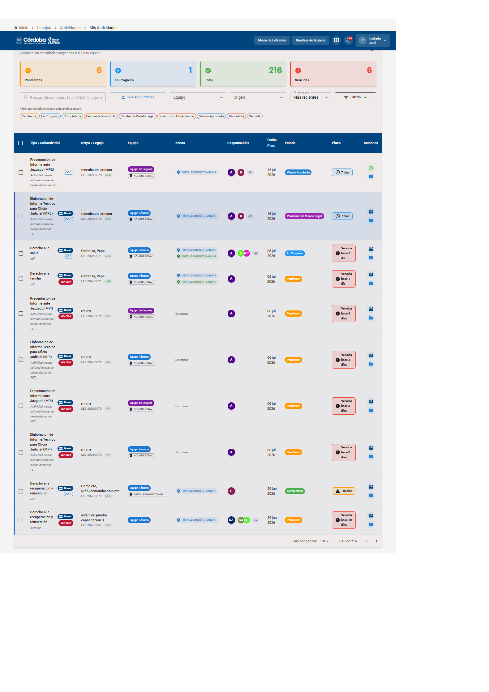
5
Seguimiento global: "Mis Actividades"
El botón "Mis Actividades" lleva a un panel con todas las actividades asignadas a vos o a tu equipo, sin importar de qué legajo son: contadores de Pendientes/En Progreso/Total/Vencidas, buscador, filtros por Equipo/Origen, y el estado real de cada una — Pendiente, En Progreso, Completada, Vencida, Pendiente de Visado JZ, Pendiente de Visado Legal o Visado Aprobado.
📸 Captura: 0122-captura-0122.png
✅ Ya sabés cómo crear y seguir actividades del Plan de Trabajo.
Parte 2 El detalle de una actividad
Al hacer clic en el nombre de una actividad se abre su ficha: acá es donde se documenta todo lo que se hizo para completarla.
Paso 1 de 7
El detalle de una actividad
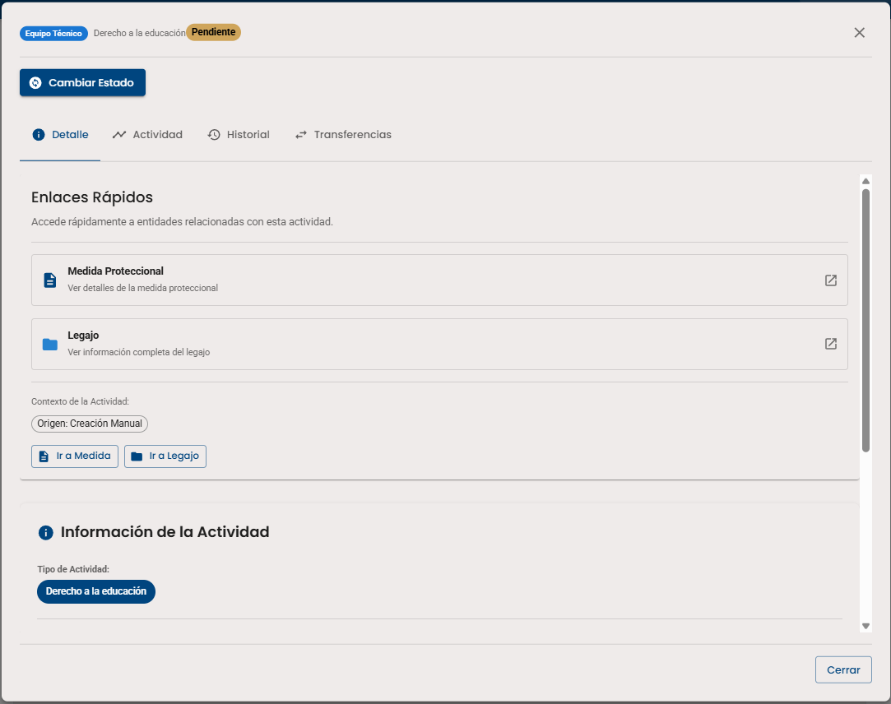
1
El detalle de la actividad
Al hacer clic en el nombre de una actividad (por ejemplo "Derecho a la educación") se abre un modal con 4 pestañas: Detalle, Actividad, Historial y Transferencias. La pestaña Detalle muestra "Enlaces Rápidos" (acceso directo a la Medida Proteccional y al Legajo), el "Contexto de la Actividad" (por ejemplo "Origen: Creación Manual") y el Tipo de Actividad.
📸 Captura: 0127-actividad-detalle-tab.png
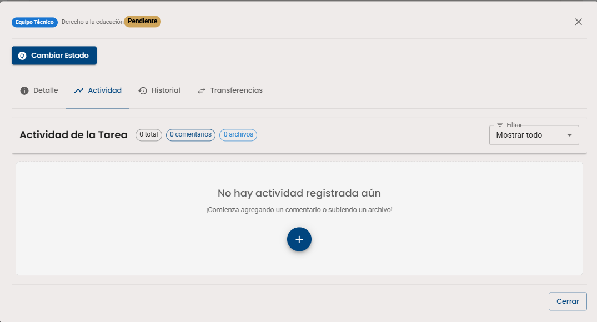
2
La pestaña "Actividad", al principio vacía
Acá es donde se van a sumar todas las acciones, informes o intervenciones que se hagan para completar la tarea. Al principio dice "No hay actividad registrada aún — ¡Comenzá agregando un comentario o subiendo un archivo!", con un botón "+" para empezar.
📸 Captura: 0128-actividad-tab-vacia.png
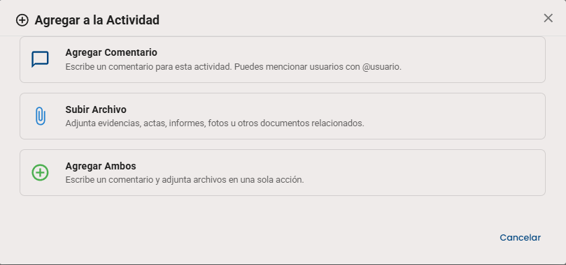
3
Elegí qué agregar
El botón "+" ofrece 3 opciones: Agregar Comentario (podés mencionar a otros usuarios con @usuario), Subir Archivo (evidencias, actas, informes, fotos u otros documentos) o Agregar Ambos en una sola acción.
📸 Captura: 0129-agregar-a-actividad-modal.png
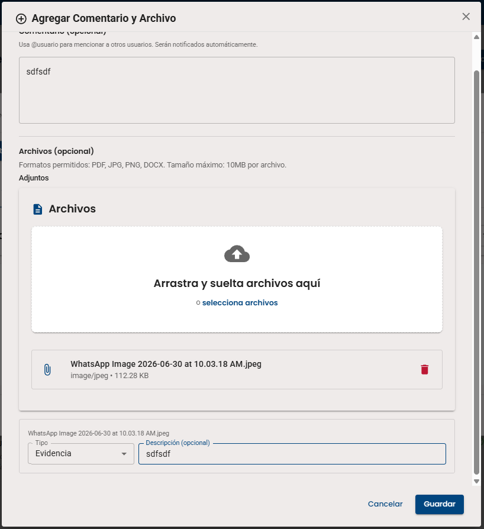
4
Completá el comentario y adjuntá el archivo
Se escribe el comentario (opcional) y se arrastra el archivo (PDF, JPG, PNG o DOCX, hasta 10MB). Cada archivo se puede clasificar por Tipo (por ejemplo "Evidencia") y llevar una breve descripción.
📸 Captura: 0130-agregar-comentario-archivo.png
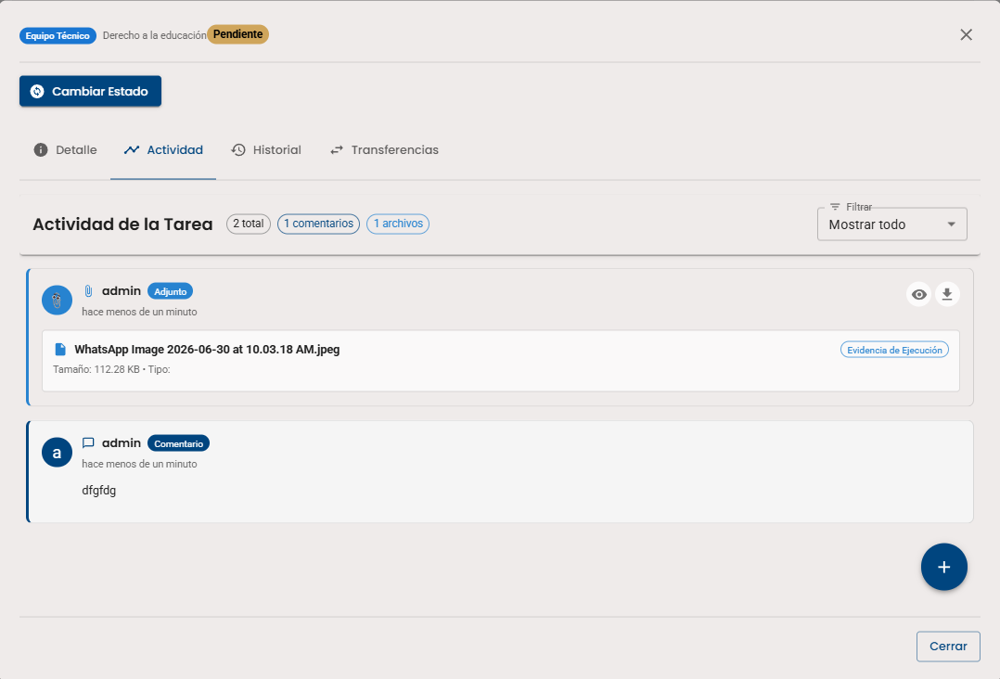
5
Ya queda todo documentado
La pestaña Actividad ahora lista cada registro por separado — el archivo adjunto y el comentario — con quién lo hizo y hace cuánto. Arriba, los contadores ("2 total", "1 comentarios", "1 archivos") resumen todo lo que se cargó.
📸 Captura: 0131-actividad-tab-con-registros.png
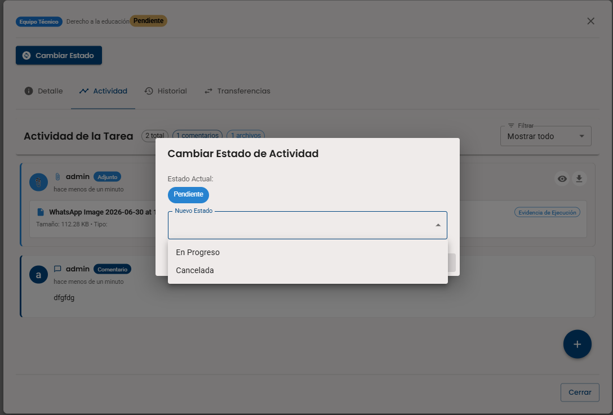
6
Cambiar el estado de la actividad
El botón "Cambiar Estado" (arriba de las pestañas) abre un modal simple: muestra el Estado Actual (por ejemplo "Pendiente") y un desplegable de Nuevo Estado con las opciones disponibles según en qué punto está la actividad (por ejemplo "En Progreso" o "Cancelada").
📸 Captura: 0132-cambiar-estado-actividad.png
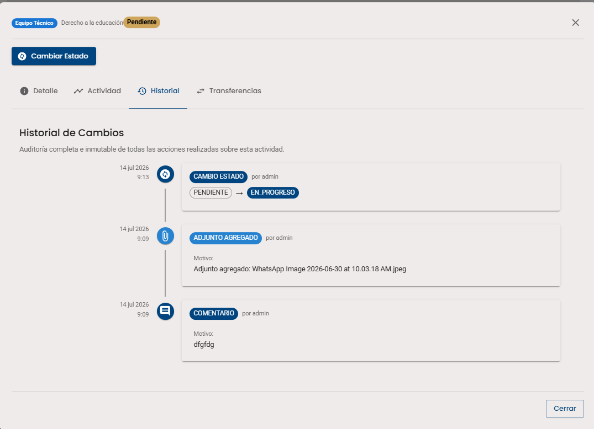
7
Historial de Cambios
La pestaña Historial es una auditoría completa e inmutable de todo lo que pasó con la actividad: cambios de estado (Pendiente → En Progreso), adjuntos agregados y comentarios, cada uno con la fecha, la hora y quién lo hizo.
📸 Captura: 0133-actividad-historial-tab.png
✅ Ya sabés cómo documentar y auditar una actividad de punta a punta.
🖐️ Practicá vos mismo/a
Probá el sistema jerárquico: elegí primero el Derecho Principal y después la Actividad Específica que le corresponde.
Agregar Actividad
✅ Actividad agregada al Plan de Trabajo, en estado "Pendiente".
Checklist de la práctica
- Elegiste el Derecho Principal
- Elegiste la Actividad Específica
- Asignaste un Responsable Principal
- Guardaste la actividad